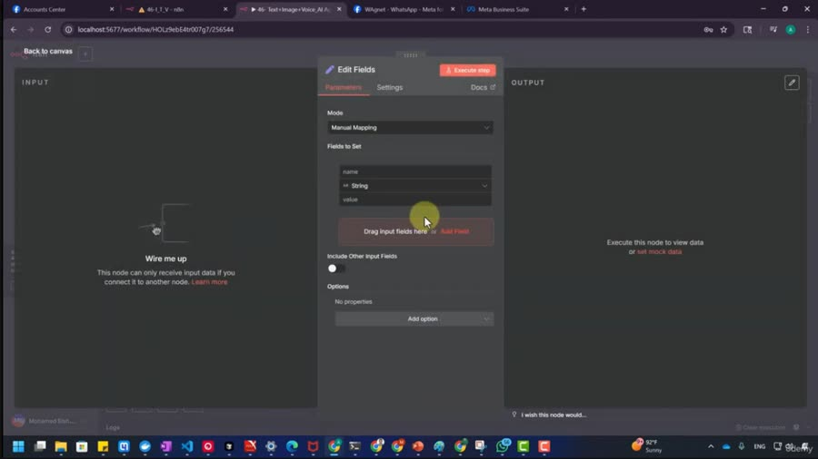
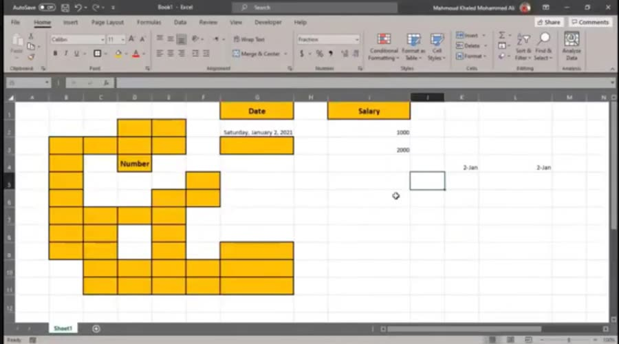
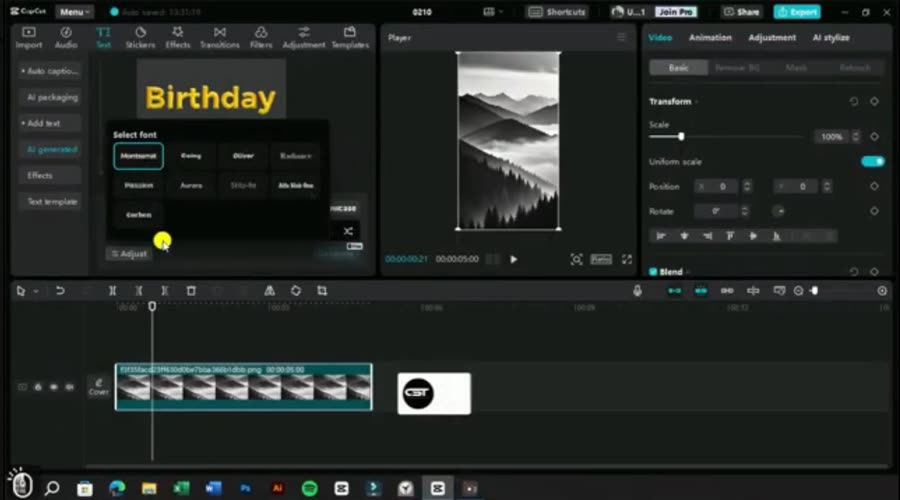

01 ↗
اتعلم الفكرة،
مش مكان الزرار.
الأدوات بتتغير، لكن المبادئ اللي وراها بتفضل مفيدة. لما تفهم الأساس، تعلم أداة جديدة بيبقى أسهل.
مش لازم تعرف كل حاجة، ولا تقضي ساعات بتدوّر على نقطة البداية. اتعلم إزاي تتعلم، وافهم الأساسيات، وخلي الأدوات تساعدك تواكب العالم.
علشان كده عملنا KORSUP: مكتبة مهارات رقمية مرتبة تساعدك تستكشف المجالات اللي تهمك، وتتعلم لشغلك أو لنفسك.

AI / AUTOMATION
PRODUCTIVITY
CREATOR STUDIOبنحاول نخلي طريق التعلّم أوضح وأسهل. لأن مش كل شخص يقدر يدفع مبالغ كبيرة علشان يجرّب مجال جديد، ومش كل مهارة لازم تتحول لفلوس علشان تبقى مفيدة.
كل حاجة جديدة بتفهمها ممكن تغيّر طريقة تفكيرك، وتخليك تعرف تتعامل مع أدوات ومواقف ماكنتش تعرفها قبل كده.
الأدوات بتتغير، لكن المبادئ اللي وراها بتفضل مفيدة. لما تفهم الأساس، تعلم أداة جديدة بيبقى أسهل.
فيديو، تطبيق عملي، ملخص أو أسئلة. استخدم أدوات زي NotebookLM لمساعدتك في تنظيم المعلومات وفهمها، وراجع وطبّق بنفسك.
ممكن تتعلم علشان تتطور في شغلك، أو علشان تفهم العالم حواليك، أو لأن عندك فضول تعرف حاجة جديدة.
مش لازم تعرف كل حاجة.
بس لازم تفضل تتعلم.
مش مطلوب تتعلم كل المجالات. اختار اللي محتاجه النهارده، وخلي الباقي موجود لما تحب تستكشف حاجة جديدة.
الذكاء الاصطناعي، ChatGPT، Excel، الأتمتة وتنظيم الشغل.
افهم الأدوات اللي بتوفر وقتكصناعة المحتوى، CapCut، المونتاج والمحتوى القصير.
من الفكرة لحد التنفيذمبادئ التصميم، الهوية البصرية، Photoshop وCanva.
اتعلم تشوف وتبني بصريًاالتسويق، الإعلانات، المبيعات وفهم الجمهور.
افهم السوق مش بس الأدواتالتعامل مع العملاء، إدارة المشاريع وبناء مسارك.
مهارات عملية في الشغلمواد لغات ومراجع إضافية في مجالات مختلفة.
دايمًا فيه حاجة جديدة تكتشفهاالمكتبة بتضم ملفات تعليمية بصيغ ومستويات ولغات مختلفة، منها فيديوهات ومواد مساعدة. مش كل ملف كورس مستقل.
عملنالك فهرس تجريبي من مواد مختارة، تقدر تتصفحه وتبحث فيه قبل ما تقرر. أسماء حقيقية من المكتبة، من غير روابط تنزيل أو دخول للملفات.
افتح الفهرس التجريبيالنسخة الكاملة للمشترين فيها البحث والتصنيفات والمفضلة وروابط Drive بعد تفعيل الوصول.
لقطات قصيرة من المواد التعليمية الموجودة في المكتبة، بالإضافة لجولة مصوّرة في تنظيم الملفات. اضغط على أي معاينة وشوفها.
معاينة من شرح عملي لواجهة الأتمتة.
مثال من مواد التعامل مع البيانات.
لقطة من درس عملي داخل CapCut.
معاينة لخطوات تحرير فيديو قصير.
لقطة حقيقية من تنظيم الملفات داخل Google Drive.
المعاينات للتعريف بطبيعة المحتوى، وليست كورسات كاملة أو ضمانًا لنتيجة معينة.
السر إنك تعرف تتعلم بشكل أذكى. الفيديو لوحده مش كفاية؛ لازم تفهم وتختصر وتجرّب.
استخدم أدوات التلخيص والبحث في مصادرك علشان ترتب اللي بتتعلمه، لكن خليك دايمًا بترجع للمصدر وبتطبق بإيدك.
تابع نصايح التعلّم على إنستجرام ↗ابدأ بحاجة واحدة واضحة بدل ما تفتح عشر كورسات مع بعض.
اسأل: ليه الخطوة دي بتتعمل؟ وإيه المبدأ اللي وراها؟
نظّم ملاحظاتك، واسأل أدوات زي NotebookLM عن مصادر أضفتها بنفسك.
اللي بتجربه بإيدك بيفضل معاك أكتر من مجرد المشاهدة.
بمجرد ما تقرر تنضم، هتكون عارف كل خطوة هتحصل إزاي. بنراجع التحويل يدويًا قبل تفعيل الوصول.
سجّل اسمك وإيميل Google اللي حابب تستخدمه لفتح المحتوى.
قيمة الوصول 499 جنيه، مرة واحدة، عبر Vodafone Cash.
هنفتحلك واتساب برسالة طلب جاهزة؛ ابعت معاها صورة إثبات الدفع.
بعد تأكيد وصول المبلغ، بنفعّل صلاحية Google Drive على إيميلك. المراجعة عادةً 5–10 دقائق وقد تزيد.
مش مطلوب تختار مسار حياتك النهارده. ابدأ باللي يهمك، وارجع لباقي المجالات في الوقت اللي يناسبك.
ودي مجرد البداية. رؤيتنا إن KORSUP يكبر لمجتمع بيتبادل المعرفة والخبرات. أي خدمات أو إضافات مستقبلية هتتعلن بتفاصيلها وقت توفرها.
الدفع عبر Vodafone Cash، والتفعيل بعد مراجعة التحويل يدويًا. الشروحات والإضافات المستقبلية مش جزءًا مضمونًا من العرض الحالي.
كل حاجة مهمة تعرفها عن المكتبة وطريقة الوصول ليها.
محتاج مساعدة؟ تواصل معانا ↗تقدر تبدأ بالمجال اللي عندك فضول تجاهه. المكتبة فيها مواد بمستويات مختلفة، لكن مش كل الملفات مخصصة للمبتدئين؛ اختار موضوعًا واحدًا وابدأ منه.
المهارات الرقمية مش للشغل الحر بس. أدوات الإنتاجية، تنظيم المعلومات، التصميم وفهم التكنولوجيا ممكن تفيدك في الدراسة، شغلك الحالي أو حياتك اليومية.
إحنا بنقدملك نقطة بداية منظمة فيها مواد من مجالات مختلفة بدل ما تبدأ كل مرة من الصفر في البحث. ده مش بديل عن التجربة والتطبيق، لكنه بيساعدك تكتشف وتختار.
لأ. المكتبة بتضم فيديوهات وكورسات وملفات وصوتيات ومواد مساعدة، وبمستويات ولغات مختلفة. عدد الملفات مش معناه نفس العدد من الكورسات المستقلة.
الوصول للمحتوى المشمول في المكتبة الحالية دائم وبدون تجديد شهري. أما الإضافات والخدمات المستقبلية فهتتعلن شروط إتاحتها بشكل مستقل وقت إطلاقها.
بعد ما تبعت بياناتك وإثبات التحويل على واتساب، بنراجع استلام المبلغ، وبعد التأكيد بنضيف إيميل Google الخاص بيك بصلاحية مشاهدة. المراجعة عادةً 5–10 دقائق، وممكن تزيد حسب الضغط أو ظروف التحويل.
لأ، بنحتاج عنوان إيميل Google فقط علشان نفعّل صلاحية الوصول. ما تبعتش كلمة السر أو أي رمز تحقق لأي حد.
العرض الحالي للوصول للمكتبة التعليمية، ومش بيشمل شهادة معتمدة أو تدريب فردي أو ضمان الحصول على وظيفة.
تابعنا علشان توصلك أفكار وأدوات ونصايح تخلي التعلّم أسهل. ولو عندك سؤال عن المكتبة أو الوصول، إحنا موجودين على واتساب.
الخطوة اللي هتاخدها النهارده ممكن تخليك تفهم بكرة بشكل مختلف.
اكتشف وصول KORSUP ↗